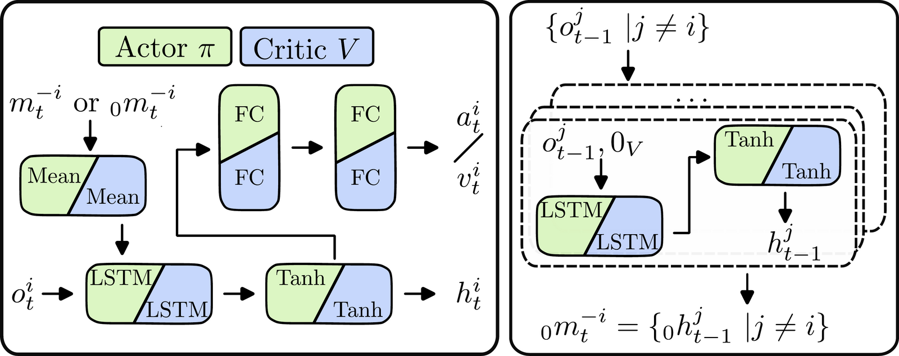
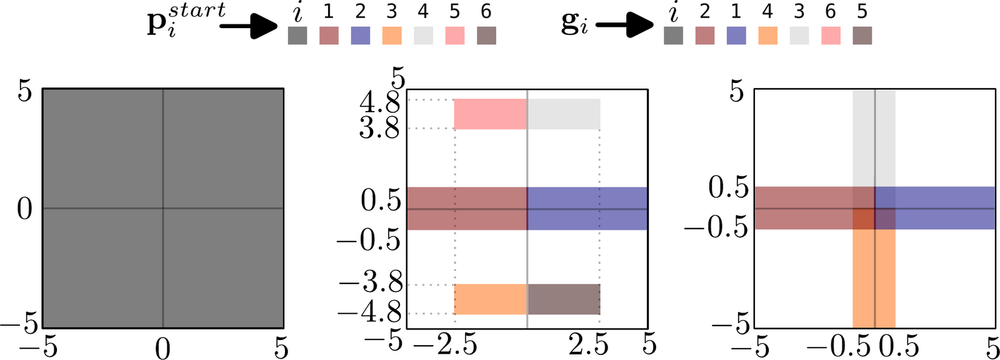
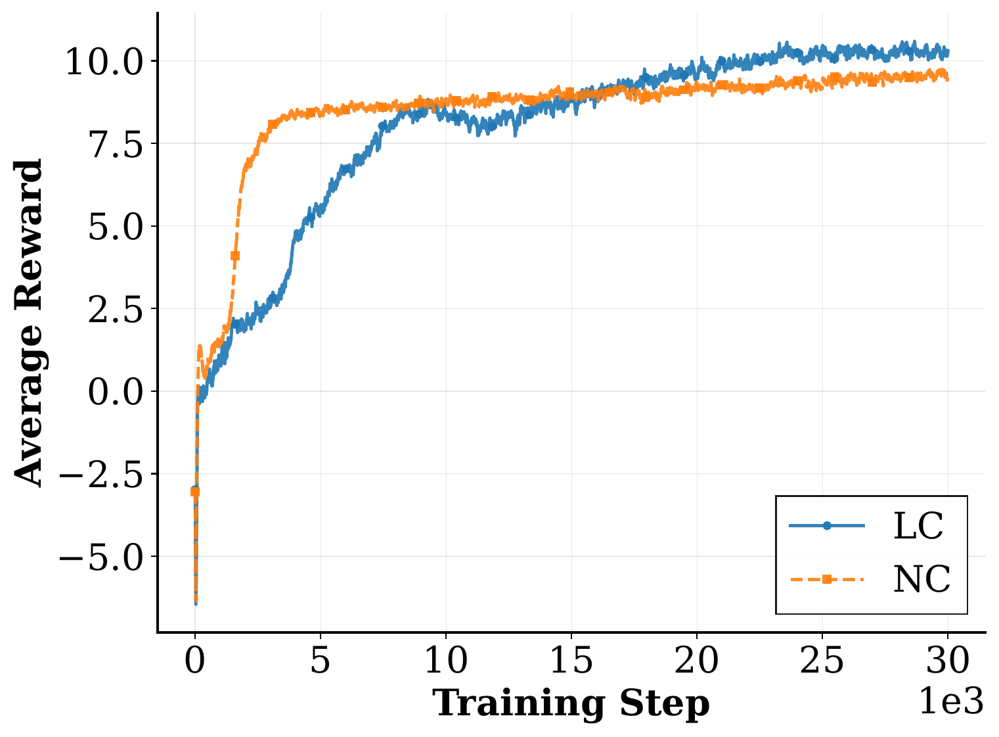
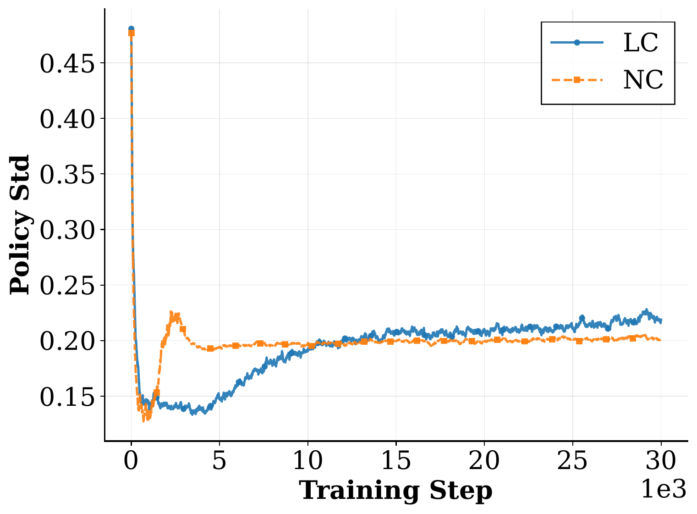
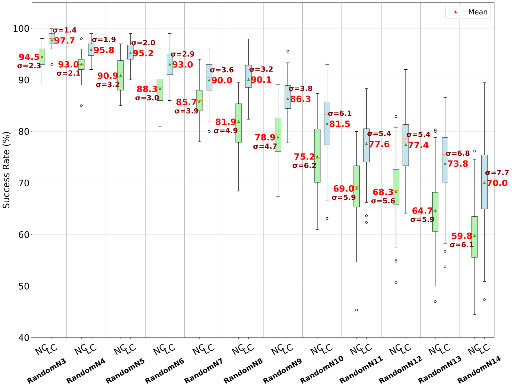
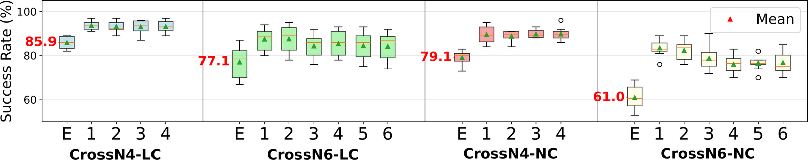
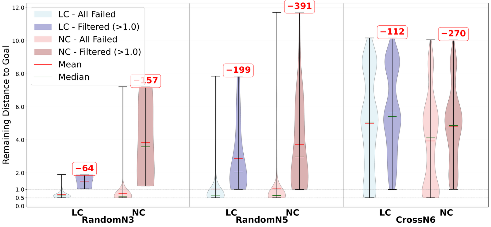
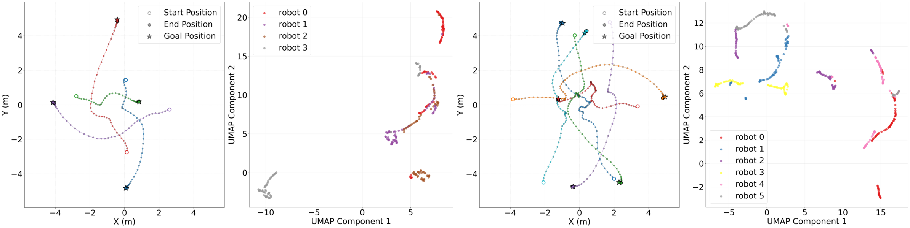

Learned Communication for Continuous Multi-Robot Motion Planning
2027 IEEE/SICE International Symposium on System Integration (SII 2027), Kobe, Japan

Summary
When many robots share a workspace and each one only sees its own surroundings, avoiding each other is hard. Our idea is to let them talk: every robot sends a small latent vector to the others, and what goes into that vector is learned rather than hand-designed. One shared policy is trained with proximal policy optimization (PPO), and it learns both what to say and how to move.
Compared with an identical policy that cannot communicate, our approach raises the average episode success rate by up to 21.2 percentage points. It was trained with four robots only, yet works zero-shot with teams of 3 to 14 robots.
Method
The actor has two parts. A communication module takes the robot's own observation together with the messages received from the others. It averages the incoming messages and passes them through an LSTM cell and a tanh, which produces the robot's outgoing message. A motion planning module (two fully connected layers) maps this encoding to the control action. The planner is built on top of the message encoding, so gradients flow through the communication module and PPO optimizes talking and moving together. Averaging the messages means the same network handles any team size.

Training is tricky because actions are sampled with noise while the messages must stay consistent. To handle this, we reuse the LSTM and tanh of the communication module to estimate the messages the robot would have received, and then run the actor exactly as at inference time. The critic is handled the same way.
Setup
The robots are ANYmal-C quadrupeds simulated in Isaac Sim / Isaac Lab, with no static obstacles, so all the difficulty comes from robots avoiding each other. We train on RandomN4 only and evaluate on RandomN3–N14 and on two harder "crossroads" layouts, CrossN4 and CrossN6. The workspace size stays the same, so bigger teams mean more crowding.

Results
Learning dynamics. The baseline's reward rises fast and then plateaus. With communication the reward climbs more slowly but ends higher, which suggests that communication lets the policy find better navigation strategies.


Success rate across team sizes. LC = learned communication (ours), NC = no communication.
| Robots | LC | NC | Δ |
|---|---|---|---|
| 3 | 93.6 | 87.6 | +6.0 |
| 4 (train) | 87.1 | 80.3 | +6.8 |
| 6 | 72.5 | 58.2 | +14.3 |
| 8 | 56.7 | 35.5 | +21.2 |
| 10 | 34.2 | 15.5 | +18.7 |
| 12 | 19.1 | 6.8 | +12.3 |
| 14 | 9.9 | 2.1 | +7.8 |
The gap grows with team size. Per robot, our policy keeps above 90% success up to 8 robots, while the baseline already falls below 90% at 6.


Why do robots fail? In the easier layouts most failed robots end up within 1 m of their goal, so they simply ran out of time. In CrossN6, failed robots are still far from their goals, which points to collisions.

What do the messages look like? Robots learn curved paths that steer around each other. A UMAP projection of their messages forms continuous, line-like structures: messages move smoothly as the episode unfolds, so they carry temporally coherent information rather than noise.
